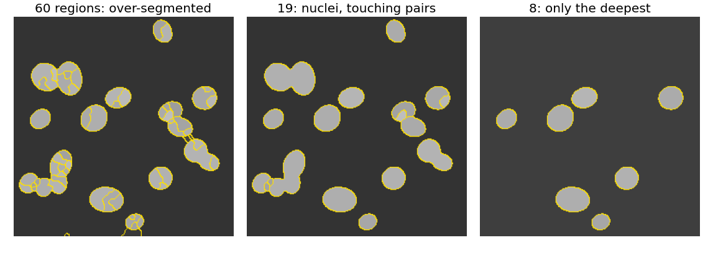
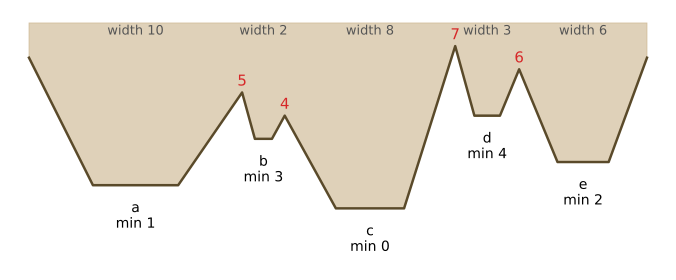
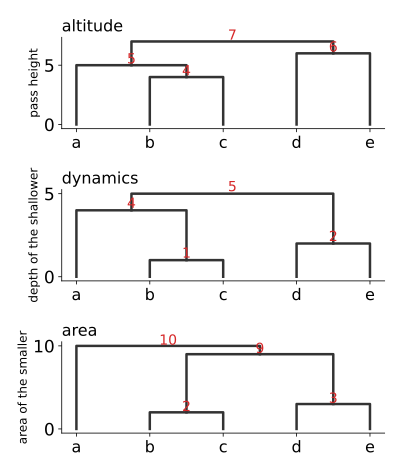
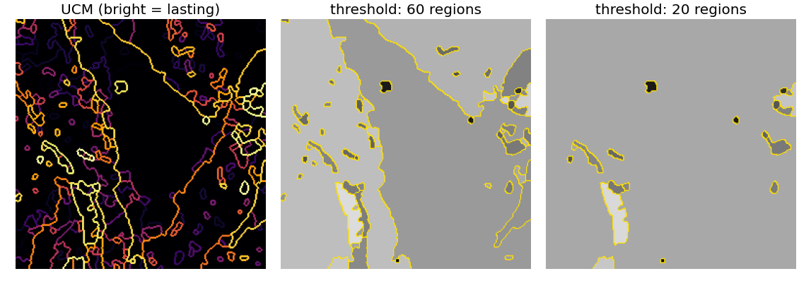
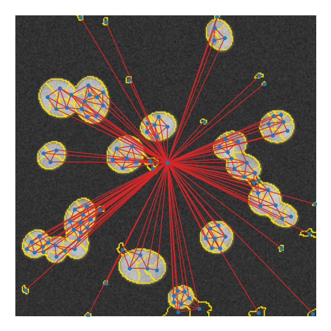
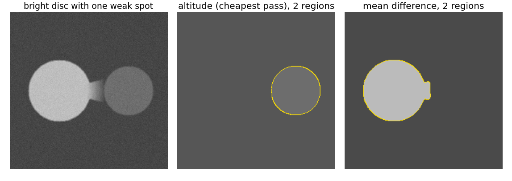
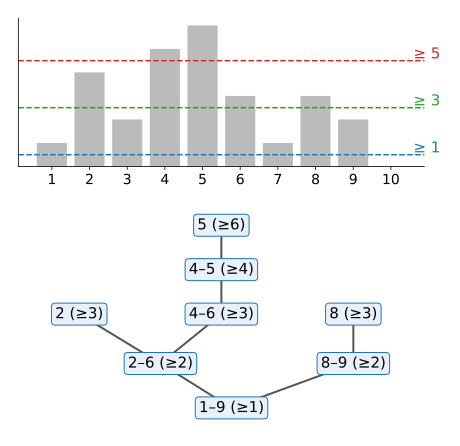

Single linkage cut its tree at one threshold; the watershed stopped when the markers’ floods met. Today we keep every merge: one tree that contains all segmentations at once.
Slides titled The math give the formulas and proofs; the ideas are complete without them.
The gradient watershed unit ended with a tree: merge watershed basins across their lowest pass, one pair at a time. Cutting that tree at a height h gave the same result as flooding from the h-minima.
Today this tree is the object of study, not a by-product.
There is rarely one right scale: a part of a nucleus, a nucleus, a pair of touching nuclei, a cluster of cells.
Right: one hierarchy of a synthetic nuclei image, cut at three levels. Of 18 true nuclei, 8, 13 and 7 are matched (IoU ≥ 0.5) at 60, 19 and 8 regions: no single level is right for all.

Right: five basins a–e of a 1D landscape. Merged across their passes in increasing order: b+c at 4, then a at 5, d+e at 6, all at 7 (next slide, top tree). A cut between 5 and 6 gives \{a, b, c\}, \{d\}, \{e\}.

The top tree on the next slide is this hierarchy for the five basins.
Same graph, same spanning tree, different order. Flood by altitude as before, but each time two regions meet, give that merge the attribute of the smaller one (the one that would disappear):
Then sort the merges by these new values. Five basins (right):

Give every boundary between two leaves the level at which it disappears (the ultrametric of the two leaves): one grey image, the UCM.
Right: the micrograph’s dynamics hierarchy (310 basins), its UCM, and two thresholds. The best classical contour detectors of the 2010s output exactly such a map.

A region adjacency graph (RAG): one node per region, one edge per touching pair. Nodes and edges carry statistics: area, mean grey level, histogram; boundary length, lowest pass, mean gradient along the boundary.
Greedy merging: always merge the most similar adjacent pair, update the statistics of the new region and its edges, repeat. A priority queue with lazy updates (old entries are skipped when popped) keeps it fast.
Right: the RAG of the 115 basins of the nuclei image (one node per basin at its centroid; the big background basin is the hub in the middle).

A 3 \times 3 grid of regions with means \begin{bmatrix} 10 & 12 & 30 \\ 11 & 25 & 31 \\ 40 & 26 & 50 \end{bmatrix} merged by difference of means (4-neighbours):
After each merge the means change, so the order is not known in advance: this is not single linkage. Variants: statistical region merging (merge when the difference is within what noise can explain) and binary partition trees (any merging criterion, recorded as a tree).
A bright disc (190) with one weak spot in its boundary (a gentle ramp), and a darker disc (110) with a sharp boundary.
One weak pixel decides a minimum; it hardly changes a mean.

Threshold the image at every level t and take the connected components of \{f \ge t\} (labelling unit). Raising t splits and shrinks components: they nest into a tree, the component tree (max-tree).
